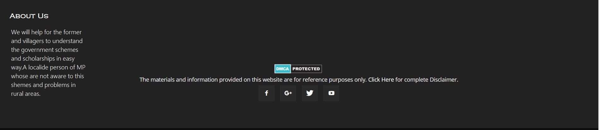

Aim to Change
Benefits of the scheme:-
Social protection for the most vulnerable people living in rural India by providing employment opportunities.
Livelihood security for the poor through creation of durable assets, improved water security, soil conservation and higher land productivity.
Drought-proofing and flood management in rural India.
Empowerment of the socially disadvantaged, especially women, Scheduled Castes (SCs) and Schedules Tribes (STs), through the processes of a rights-based legislation.
Strengthening decentralised, participatory planning through convergence of various anti-poverty and livelihoods initiatives.
Deepening democracy at the grass-roots by strengthening Panchayati Raj Institutions.
Effecting greater transparency and accountability in governance.
Thus, MGNREGA is a powerful instrument for ensuring inclusive growth in rural India through its impact on social protection, livelihood security and democratic empowerment.
Benefits of websites:-
Our website is use to aware about new schemes and yojnas launch by india or madhya pradesh government.Because in our rural areas people do not know
what and whose scheme for them they do not get to achive the benefits of the schemes so we use to solve this problems in easy way to explain their problems and know to more
details of the schemes and get the more and more benefits. This is the view of Aim to Change and we hope this is help the rural areas peoples and students
and they are aware and know about new government schemes.
Implementation of the Mahatma Gandhi NREGA (MGNREGA) involves roles and responsibilities of a large number of stakeholders from the village to the national level. The key stakeholders are
Wage seekers
Gram Sabha (GS)
Three-tier Panchayati Raj Institutions (PRIs), especially the Gram Panchayat (GP)
Programme Officer at the Block level
District Programme Coordinator (DPC)
State Government
Ministry of Rural Development (MoRD)
Civil Society
